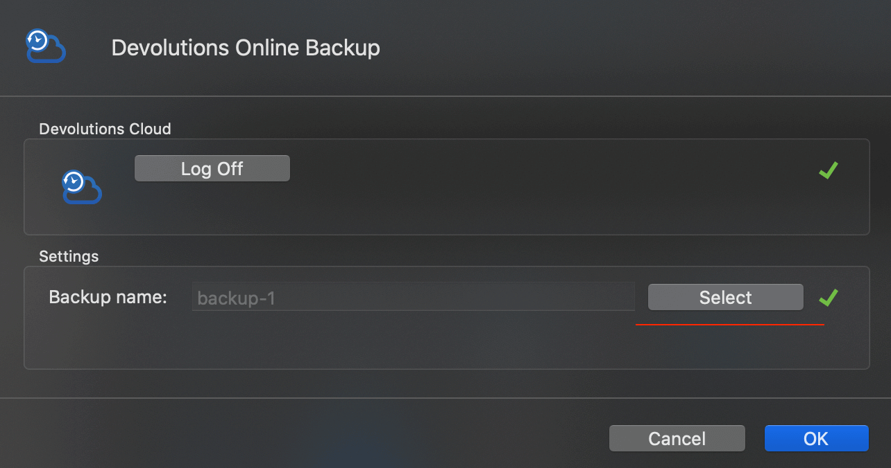
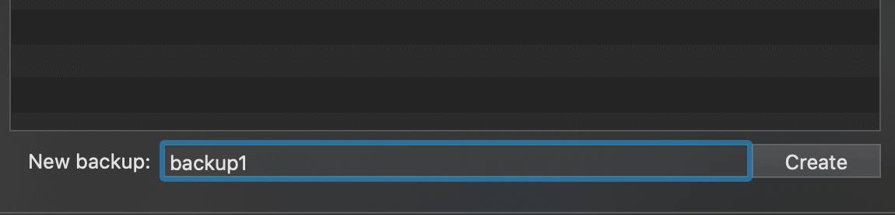

Remote Desktop Manager 使用指南

Remote Desktop Manager(RDM) 是一个功能强大的远程链接平台，支持：Microsoft Remote Desktop Protocol(RDP)，Apple Remote Desktop(ARD)，VNC，SSH，FTP，SFTP 等多种协议，覆盖各种类型的远程连接及各大网盘访问。
官网：https://remotedesktopmanager.com
官方配置手册：https://help.remotedesktopmanager.com
客户端支持：Windows，macOS，iOS，Android。有免费版和付费版区分，普通用户使用免费版即可。
下面介绍他的常规使用方法。
安装及注册
在下载页面下载合适平台的安装包：https://remotedesktopmanager.com/home/download，这里以安装 Windows 平台为例。
安装完成后启动 RemoteDesktopManagerFree，第一次启动会要求注册产品，点击下方的 create a free account 注册 devolutions 账户：
注册完成后需要验证邮箱，然后返回应用界面选择第一项使用 devolutions 账户登录：
登录成功后就可以使用 RemoteDesktopManagerFree 了，主界面如下：
设置程序访问密码
由于远程连接涉及隐私较多，最好设置一个主密码用来访问 RDM，选择 file - option，左侧选择 security：
选项中设置 use application password，下方设置 password，然后设置锁定应用的情景，我设置了 最小化/系统锁定/30分钟无操作 后锁定应用：
远程链接打开模式

建立不同的连接时，有三种模式可供选择：
•External 启动远程连接时作为外部进程打开窗口，一般用来启动本地应用程序，如 rdp 会启动微软的 mstsc.exe
•Embedded (tabbed) 在 RDM 窗口建立新的选项卡打开远程连接，方便管理打开的进程
•Undocked 启动连接时会打开新的 RDM 窗口
建立文件夹
当建立了很多个远程连接后，为了方便管理，可以建立文件夹将连接进行分类放置。
在导航栏根路径： local data source 右键选择 add - add folder：
设置文件夹名然后确认即可，在导航栏就可以看到新建的文件夹了，将需要放到这个文件夹的连接拖动到这位文件夹即可完成归类：
建立 SSH 连接
dashboard 界面点击 new entry：
上方搜索 ssh，然后选择 ssh shell 点击 ok：
设置 name 方便识别这个连接，然后下方设置 ssh IP 地址/端口，以及账户/密码：
为避免长时间不操作，ssh 连接中断，选项卡切换到 advanced 设置 send keepalive ping: 30s，Windows 版里的名称是 ping interval，点击确认完成，：
完成后，在左侧导航栏找到刚建立的连接 name，点击 open session 即可建立连接：
建立 SFTP 连接
SFTP 用来管理服务器的文件，建立方法和 ssh 类似。sftp 用的链接协议是 ssh 的，所以登录端口以及账户密码和 ssh 一样。
设置 Name 代表这个连接名，然后设置 host/port/username/password 即可：
建立 RDP 连接
RDP 是微软远程连接的协议，走的是 TCP 流量，默认端口是 3389。下面介绍如何添加 RDP 连接。
首先进行系统设置，打开远程连接功能。进入设置界面搜索 remote，选择 remote desktop settings：
点击 enable 即可打开远程功能，下方提示的 pc name 是在局域网内电脑的名称。可以进行局域网连接：
系统设置完成后，返回 RDM 点击 new entry 添加一个 rdp 连接：
然后在 rdp 设置栏设置 name 定义此连接名称，然后是 host/port/username/password：
在此解释下 host/port/username/password 如何设置：
- 如果是在同一局域网下访问 rdp，host 设置为上面打开系统远程时提供的 pc name 或者 cmd 执行
hostname查看，RDM 就会搜索局域网下的这个设备，端口号默认就是 3389 - 如果是在外网访问，则 host 要设置为此设备的外网 IP 地址，需要设备有公网 IP。
- 如果通过 frp 等内网穿透工具转发 rdp 连接到外网，则 host 和 port 要设置为 frp 服务端 IP 地址和设定的端口
- username 是 Windows 用户名，可以打开 cmd 执行
whoami查看 - password 就是你开机时候登录系统的密码，如果登陆的是 Microsoft 账号，则密码就是微软账户密码
如果远程连接要降低带宽占用，可以设置 advanced 选项里的 encoding 类型。
关于 frp 内网穿透参考我的教程：https://blog.niekun.net/archives/539.html
RDP 的详细设置参数参考官方 RDP 配置手册。
macOS ARD 设置
macOS 系统的远程连接协议是 ARD，走的是 TCP 流量，默认端口是 5900。下面介绍如何添加 ARD 连接。
首先在 macOS 系统打开远程连接功能：
- 打开 system preference - sharing
- 打开 remote management 其他设备就可以使用 ARD 访问本机了
- 打开 remote login 可以打开远程设备对本机的 ssh 访问，在其他设备上使用上面的 ssh 连接方式建立连接
本机 host 名称可以在终端执行 hostname 查看，也可以直接设置本机局域网 IP，使用 ifconfig 查看
系统设置完成后，就可以配置 ARD 了，建立新的 ARD entry，设置 name：
然后类似 RDP 设置 host/port/username/password：
下面介绍 host/port/username/password 各项参数如何设置：
- 如果在本地远程访问设备就 host 就直接用设备局域网地址或在终端执行
hostname命令得到本机 host，port 默认为 5900 - 如果是在外网访问，则 host 要设置为此设备的外网 IP 地址，需要设备有公网 IP。
- 如果通过 frp 等内网穿透工具转发 rdp 连接到外网，则 host 和 port 要设置为 frp 服务端 IP 地址和设定的端口
- username 就是本机用户名，用户名可以打开终端执行命令
whoami查看 - 密码就是上面设置的用户名对应访问密码
如果远程连接要降低带宽占用，可以设置 advanced 选项里的 encoding 类型。
关于 frp 内网穿透参考我的教程：https://blog.niekun.net/archives/539.html
ARD 的详细设置参数参考官方 ARD 配置手册。
备份/恢复数据
当我们使用 RDM 建立了很多连接及文件夹后，为了在其他设备上同步配置及数据备份/恢复，我们需要设置数据备份配置。
首先需要登陆 devolutions 账号，也就是开始安装 RDM 时注册的账号。如果没有登陆的话点击 file - devolutions account - sign in 登陆账号，注意选上下面的 automatically sign-in at start up，这样下次打开 RDM 就会自动登陆账号了：
点击 file - backup - backup configuration：
点击 select：

如果之前没有建立过备份配置，在下方设置配置名称，点击 create：

上方显示当前账号已建立的配置，要选择已有的配置作为本机配置，则直接选中对应配置名点击 select，然后点击 ok，就配置好了本机备份配置：
可以多个客户端使用同一个备份名的存档，这样就可以实现多设备同步数据了。
如果要备份当前数据，选择 file - backup - execute backup：
要恢复数据到某个备份节点，选择 file - backup - restore，会弹出所有存在的备份，根据需要选中某个备份，点击 ok 即可恢复：
以上就是 RDM 的使用方法，更多复杂的配置方法或细节参数设置，可以参考官方文档：https://help.remotedesktopmanager.com/remote-connections.html